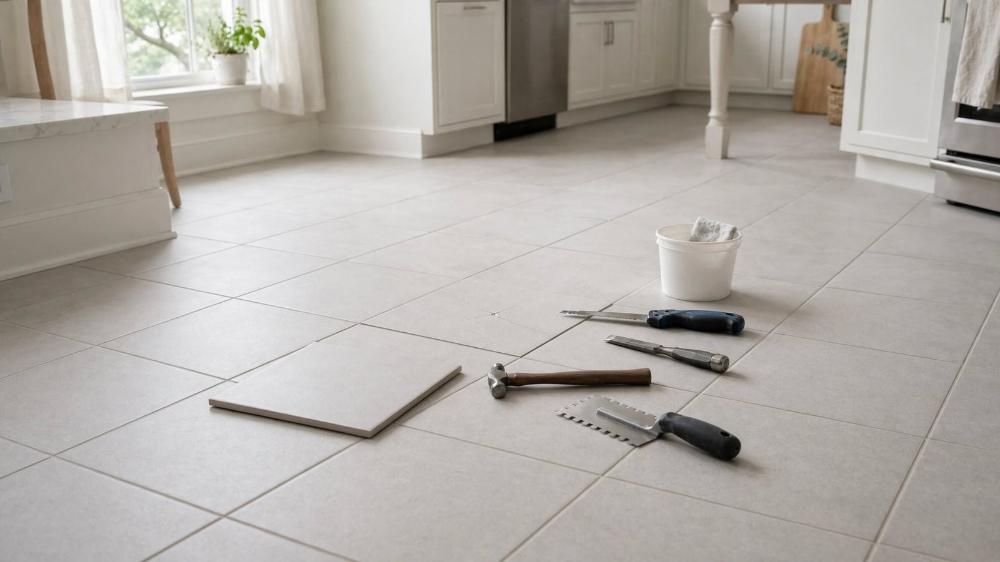
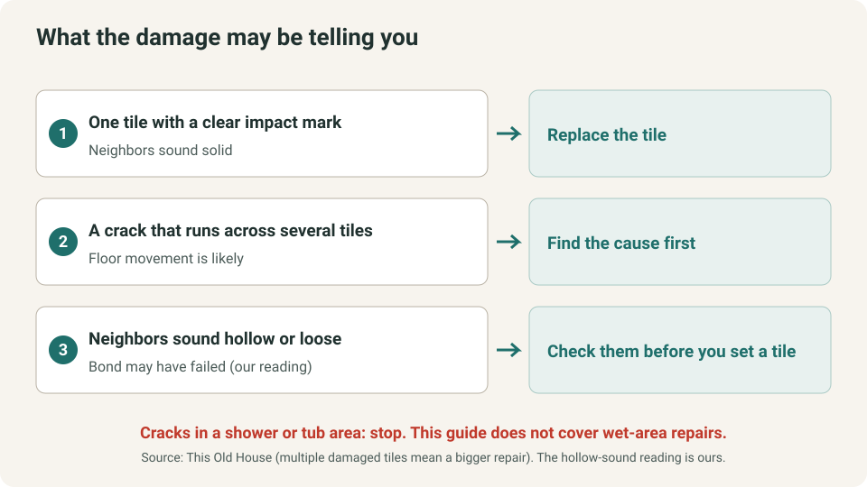
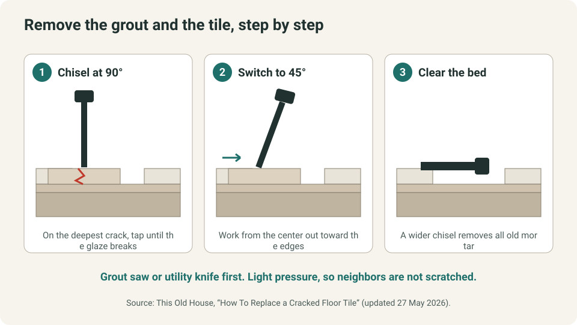
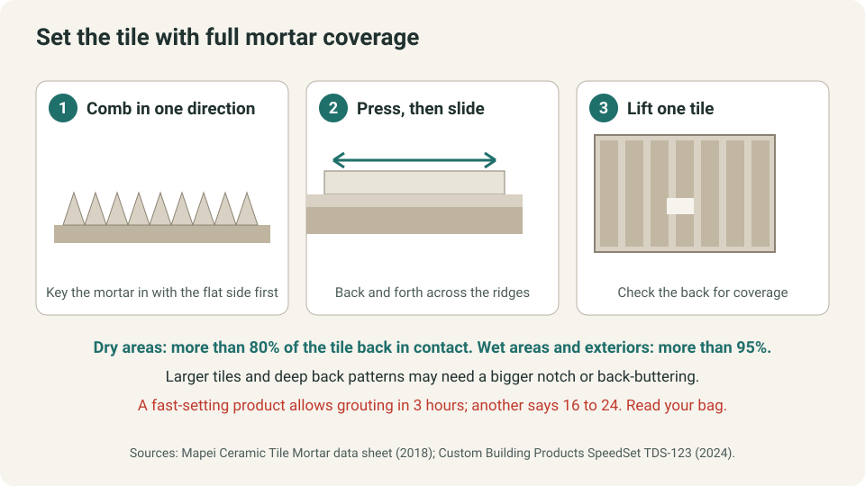

WEEKEND PROJECTS · FLOORING
How to Replace One Cracked Floor Tile Without Redoing the Floor

One cracked tile can be replaced without touching the rest of the floor, but only if you know why it cracked, remove it without hurting its neighbors, and set the new tile with full mortar contact. This guide follows This Old House’s step-by-step method and two real mortar data sheets, which agree on coverage and disagree sharply on how long to wait before grouting.
The quick answer
- Find the cause first. One tile with an impact mark is a fair DIY job. A crack across several tiles points to something bigger.
- Remove it carefully. Cut the grout, tap a cold chisel on the deepest crack, work from the center out, then clear all the old mortar from the bed.
- Set it with full contact. Both data sheets we opened ask for more than 80% mortar contact in dry areas and more than 95% in wet areas.
- Wait on your product’s schedule. The wait before grouting runs from 3 hours to 24 hours depending on the mortar, so read the label.
Quick plan
| Item | Detail |
|---|---|
| Time | This Old House estimates about two days, mostly waiting for the adhesive and grout |
| Best for | One tile damaged by impact on a sound, dry floor |
| Not for | Cracks across several tiles, shower or tub areas, suspected asbestos, large-format tile |
| Goal | A tile flush with its neighbors and fully bonded |
Step 1: Find out why it cracked
Look at the tile and the area around it. This Old House says to inspect for other cracks or loose tiles, and that if several tiles are damaged you may be facing a larger repair.

Tap the neighbors gently. A hollow sound can mean a tile is not fully bonded. That is our own reading, not a statement from the sources, but it is why both data sheets stress full mortar contact. If the cause is still there, a new tile can crack the same way.
Step 2: Protect yourself and rule out asbestos
- Dust and edges. The Custom Building Products data sheet says its mortar contains Portland cement and free silica and tells you not to breathe the dust and to wear a NIOSH-approved respirator. Wear eye protection and gloves, and watch for sharp tile edges, as This Old House warns.
- Old adhesive. If the tile sits on old resilient flooring or black adhesive, the same data sheet warns that adhesives may contain asbestos fibers. It says not to sand or grind adhesive residue and never to use adhesive removers or solvents. The Mapei data sheet says not to set tile over substrates containing asbestos.
If you suspect asbestos, stop and have it tested before you disturb it.
Step 3: Get a matching tile
This Old House calls the match the biggest hurdle. Use leftover tiles from the original job if you have them. Otherwise take a piece of the broken tile to a tile dealer, and look at the underside for clues about the maker. Even a good match can look different, because grout and glaze age.
Step 4: Remove the grout and the tile

- Cut the grout. Use a utility knife along the grout lines with light pressure so neighbors are not scratched. This Old House notes a grout saw makes it easier on tough lines.
- Break the tile. Set a cold chisel on the deepest crack and tap it with a hammer. Start with the chisel at 90 degrees to the floor, then switch to 45 degrees once you penetrate the glaze, and work from the center out toward the edges.
- Lift the pieces. Pry them up slowly and watch the neighboring grout lines for damage. If you have no tile chisel, a cold chisel or a flat-blade screwdriver will do.
Step 5: Clean the bed
Use a wider chisel to clear all the old thinset from the substrate, the same technique on mortar, cement backerboard or plywood, according to This Old House. Scrape off remaining adhesive and clean with a damp sponge. Both data sheets want a surface that is sound, clean and free of anything that could weaken the bond.
Do not use thin-set mortar to fill low spots. The Custom Building Products data sheet says it is not for that, and limits the finished bed to 3/32 to 1/4 inch for mortars without an “H” rating.
Step 6: Set the new tile with full coverage

- Mix as the label says. Both data sheets give water ratios and open times: 20 to 30 minutes for the Mapei mortar.
- Key it in, then comb. Both data sheets apply a thin coat with the flat side of the trowel, then comb the mortar in one direction with the notched side.
- Back-butter when needed. Both data sheets say you may need to back-butter the tile to reach the coverage. Bigger tiles and deep back patterns may also need a bigger notch.
- Press and slide. Set the tile firmly and move it back and forth across the ridges to collapse them. The Mapei data sheet says to leave at least two-thirds of the tile’s depth open for grout.
- Check the coverage. Both data sheets suggest lifting a tile to inspect the back. Here that means pressing the new tile, then checking once by lifting it, and re-setting if contact is poor.
- Make it flush. Use a level to check it sits even with its neighbors, as This Old House advises, and wipe off squeeze-out.
Which adhesive? The data sheets we opened are for cement-based thin-set mortars, and the Custom Building Products sheet says its fast-setting product can be used for small repairs. This Old House’s contractor instead uses a premixed acrylic adhesive for a small job. These are different products with different rules, so use the one whose label allows your tile, your floor and the area. We did not open that acrylic product’s data sheet.
Step 7: Wait, then grout
The wait depends on the product. Do not average these numbers.
| Source | Before grouting | Traffic or cure |
|---|---|---|
| Mapei Ceramic Tile Mortar data sheet (2018) | 16 to 24 hours, same as foot traffic | 7 days |
| Custom Building Products SpeedSet data sheet (2024) | 3 hours | 4 hours light, 3 days heavy |
| This Old House (acrylic adhesive) | Several hours | Grout cures 24 to 48 hours |
Mix grout as its label directs and press it into the joint with a rubber float diagonally across the tile. Clean with a damp sponge and take care not to pull it from the joints. This Old House says grout typically cures in 24 to 48 hours, after which you can seal it. It also says new grout rarely matches old because grout loses pigment, and suggests removing all the old grout or using grout dye across the floor.
Quick win (10 minutes)
Find your spare tile, or note where you can buy a match. Photograph the grout color and tap each neighboring tile. If more than the cracked one sounds hollow, stop and look into the cause first.
Common mistakes
- Replacing the tile without finding the cause.
- Setting the new tile on old mortar instead of a cleaned bed.
- Using mortar to fill a low spot, which the data sheet says not to do.
- Covering a movement joint with mortar. Both data sheets say not to bridge expansion joints.
- Grouting or walking on it before your product’s time.
- Skipping the respirator while cutting and mixing.
When to call a professional
- The crack runs across several tiles or the floor flexes.
- Several neighboring tiles sound hollow.
- The tile is in a shower or tub area, where waterproofing may be involved.
- You suspect asbestos in old adhesive or flooring.
- The tile is large format. The Mapei sheet says that mortar is best for tile up to 15 by 15 inches, and the Custom Building Products sheet says large formats need medium-bed mortars.
FAQ
Should I replace the tile or investigate first?
Investigate first if more than one tile is damaged. This Old House says several damaged tiles may mean a larger repair, and a crack across several tiles points to movement that a single new tile will not fix.
Do I need thin-set or can I use premixed adhesive?
The two data sheets are for thin-set mortars, and one says its fast-setting version can be used for small repairs. This Old House’s contractor used a premixed acrylic adhesive. Use the product whose label allows your tile, floor and area.
How long before I can grout?
It depends on the product: 3 hours for one fast-setting mortar, 16 to 24 hours for a regular-setting one, and several hours for the acrylic adhesive in the This Old House demonstration. Follow your label.
How long before I can walk on it?
The fast-setting data sheet allows light traffic after 4 hours and heavy after 3 days, and the regular-setting one asks for 16 to 24 hours and 7 days for heavy traffic. Again, follow your label.
Will the new grout match?
Often not. This Old House says grout fades over time, so a new patch rarely matches, and suggests removing all the old grout or using a grout dye to unify the floor.
Can I do this in a shower?
This guide does not cover it. A shower or tub area may involve waterproofing behind the tile, and the data sheets ask for more than 95% mortar contact in wet areas. Ask a professional.
What this guide assumes
It covers one ceramic or porcelain floor tile on a sound, dry floor in a typical U.S. home. The numbers come from two mortar data sheets and one contractor’s demonstration, so they are examples, not rules for your product. The hollow-sound reading and the shower advice are our own precautions. HomeProjectWise has not performed this repair, and we do not endorse a brand or product.
Keep going
- Where to put water leak sensors if a leak may have damaged the floor.
- How to reduce bathroom condensation if the tile is in a bathroom.
- All HomeProjectWise guides for more weekend projects.
Sources and last checked
All three documents were opened and read in full on 15 November 2026. The data sheets are for specific products, and your own mortar’s instructions override them.
- This Old House, “How To Replace a Cracked Floor Tile” (updated 27 May 2026): https://www.thisoldhouse.com/flooring/how-to-replace-a-cracked-floor-tile
- Mapei, Ceramic Tile Mortar product data (edition July 2018): https://www.buildsite.com/pdf/mapei/Ceramic-Tile-Mortar-Product-Data-2248308.pdf
- Custom Building Products, SpeedSet Fortified Thin-Set Mortar TDS-123 (October 2024): https://www.custombuildingproducts.com/product-pdf?id=1381